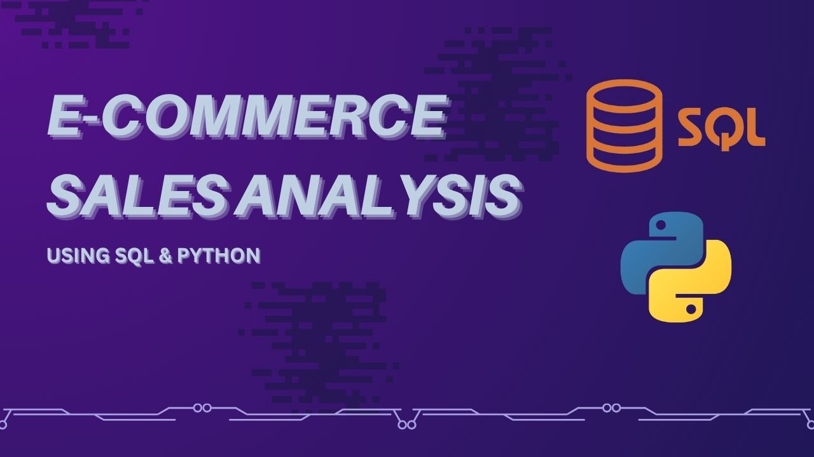
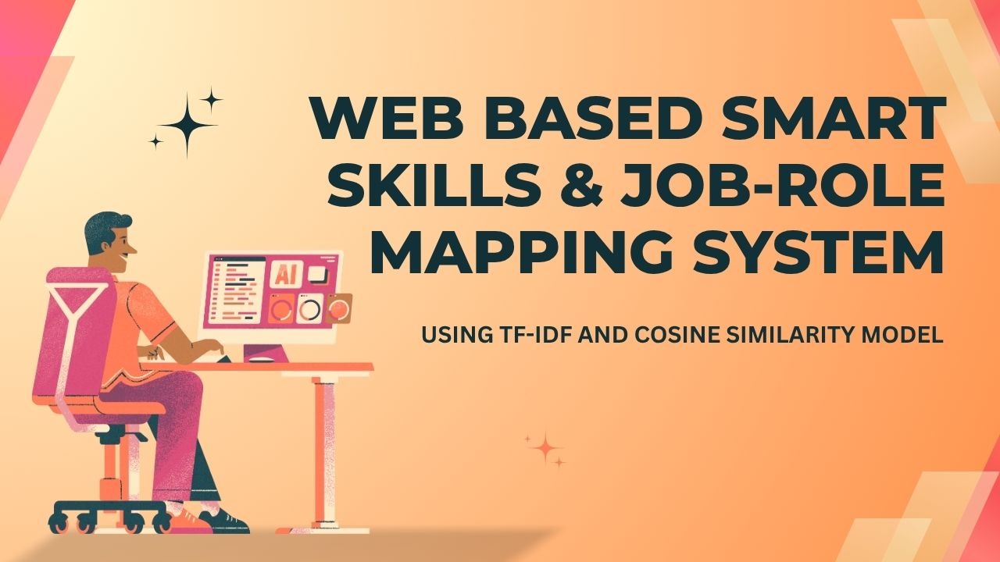
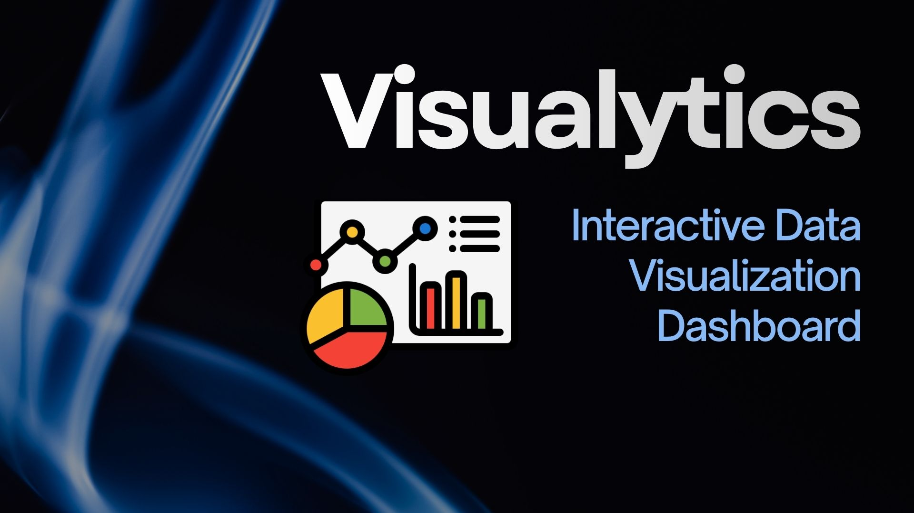
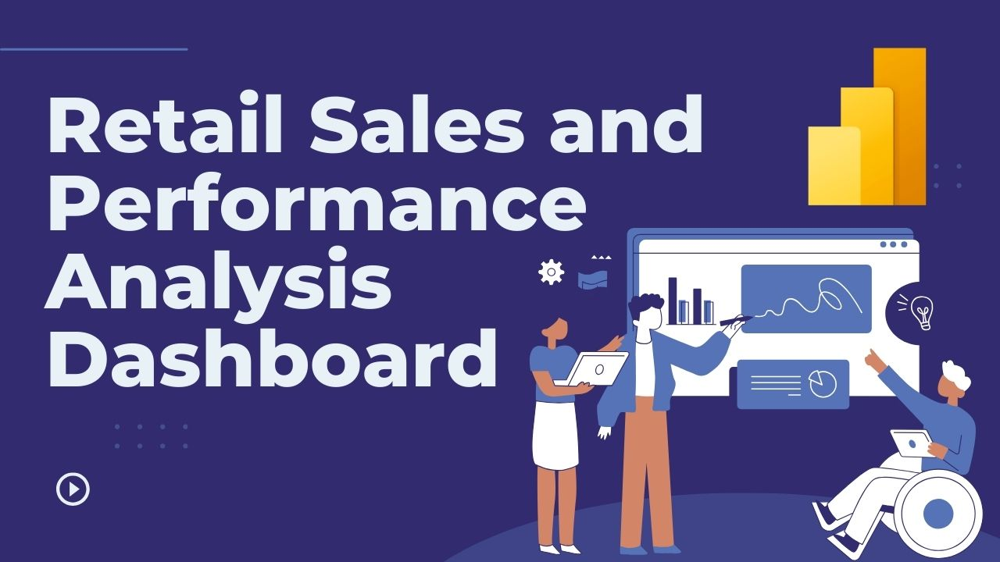
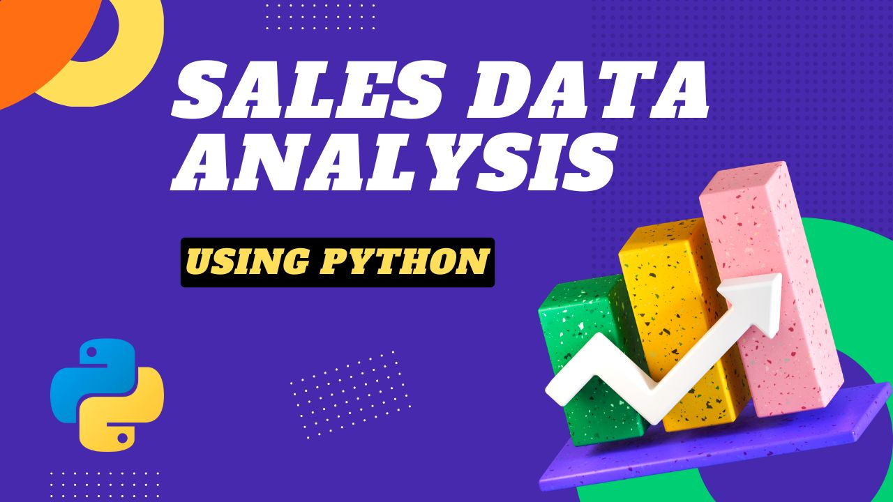
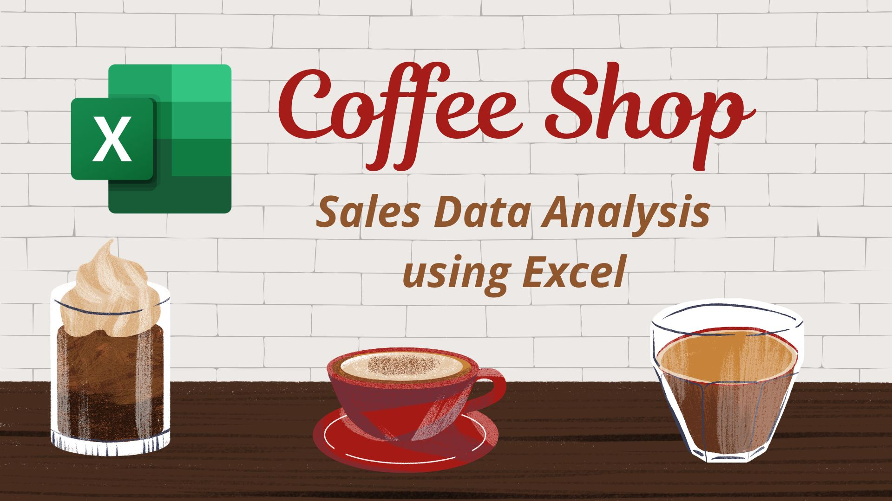
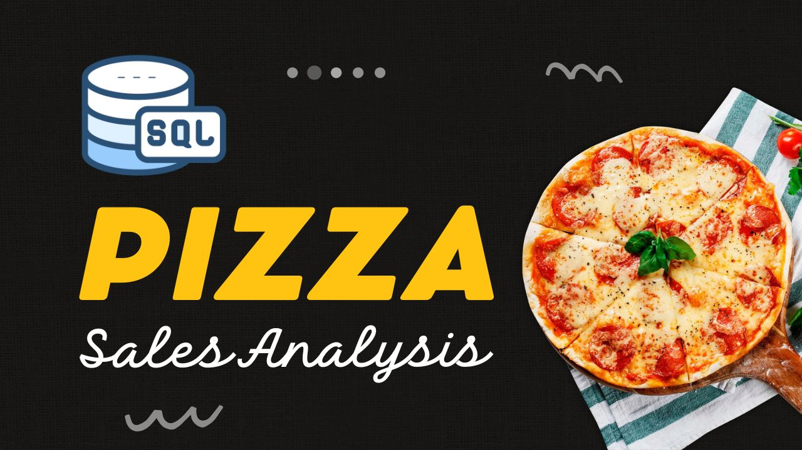

B.Tech in Artificial Intelligence & Data Science
Shri Balaji Institute of Technology and Management (RGPV University), Betul, M.P.
CGPA: 7.68 | 2022–2026
A driven Data Analyst focused on turning complex datasets into actionable insights, dashboards, and business recommendations.
B.Tech graduate in Artificial Intelligence & Data Science with hands-on experience turning raw data into actionable insights using SQL, Python, and Power BI. Built end-to-end analytics projects covering data cleaning, exploratory data analysis, and dashboard reporting, uncovering insights like revenue drivers, retention trends, and sales forecasts. Seeking an entry-level Data Analyst role to apply this experience to real business problems.
Shri Balaji Institute of Technology and Management (RGPV University), Betul, M.P.
CGPA: 7.68 | 2022–2026
Vidya Bhumi Public School, Betul | MP Board
93.00% | 2022
Sarvodaya Higher Secondary School, Betul | MP Board
91.00% | 2020
Selected work showcasing analytics, visualization, and end-to-end data solutions.
An end-to-end data engineering pipeline that scrapes live job postings daily from Naukri.com across 6 job categories using Selenium, cleans and normalizes the data (skill taxonomy, deduplication) with Pandas, and loads it into a PostgreSQL database (Supabase) with URL-based deduplication. Insights are surfaced through a 5-page interactive Power BI dashboard backed by 10 SQL queries using CTEs, window functions, and array unnesting.
Tools: Python, Selenium, Pandas, PostgreSQL, Supabase, SQL, Power BI, DAX
View on GitHub
An end-to-end analytics pipeline built on the Olist Brazilian E-Commerce dataset (100,000+ orders). Raw CSV data is loaded into a MySQL database, then analyzed using 15 SQL queries, covering joins, window functions, and CTEs, to uncover insights on revenue drivers, sales trends, and customer retention.
Tools: Python, MySQL, Pandas, Matplotlib, Seaborn
View on GitHub
A Flask-based web application that maps skills to job opportunities using a TF-IDF and Cosine Similarity model. Users can search jobs by skills or skills by job title, and track their career progress through a personalized dashboard with authentication and Plotly visualizations.
Tools: Python, Flask, SQLAlchemy, Scikit-learn, Pandas, Plotly
View on GitHub
Visualytics is an interactive, professional-grade data visualization dashboard built with Python, Streamlit, Plotly, and Pandas. It allows users to explore, analyze, and visualize CSV datasets instantly, with built-in filtering, KPIs, and predictive analytics.
Technologies: Python (Data processing & logic), Streamlit (Web dashboard), Pandas & Numpy (Data manipulation), Plotly Express (Interactive charts), Statsmodels (Time series forecasting)
View on GitHub
An end-to-end Power BI dashboard to analyze retail sales performance. The dashboard provides insights into sales, profit, cost, returns, customer behavior, and time-based trends using advanced DAX, data modeling, and business KPIs.
Tools: Power BI, Power Query
View on GitHub
This project focuses on analyzing a large sales dataset (180,000+ rows) to uncover meaningful business insights. The goal is to understand sales performance across products, time, and locations using data analysis and visualization techniques.
Tools: Python, Numpy, Pandas, Matplotlib, Seaborn, Scikit-Learn
View on GitHub
This project demonstrates data cleaning and analysis using Excel. The dataset contained 10,000+ rows with missing values, duplicate records, and incorrect entries which were cleaned before performing analysis.
Tools: Microsoft Excel, Pivot Analysis
View on GitHub
SQL-based analysis to identify revenue trends, top pizzas, peak order time, and business insights.
Tools: SQL, MySQL
View on GitHubLet’s connect if you're building data-driven teams or want help turning data into decisions.
Email: unzilas2004@gmail.com
Location: Betul, Madhya Pradesh, India